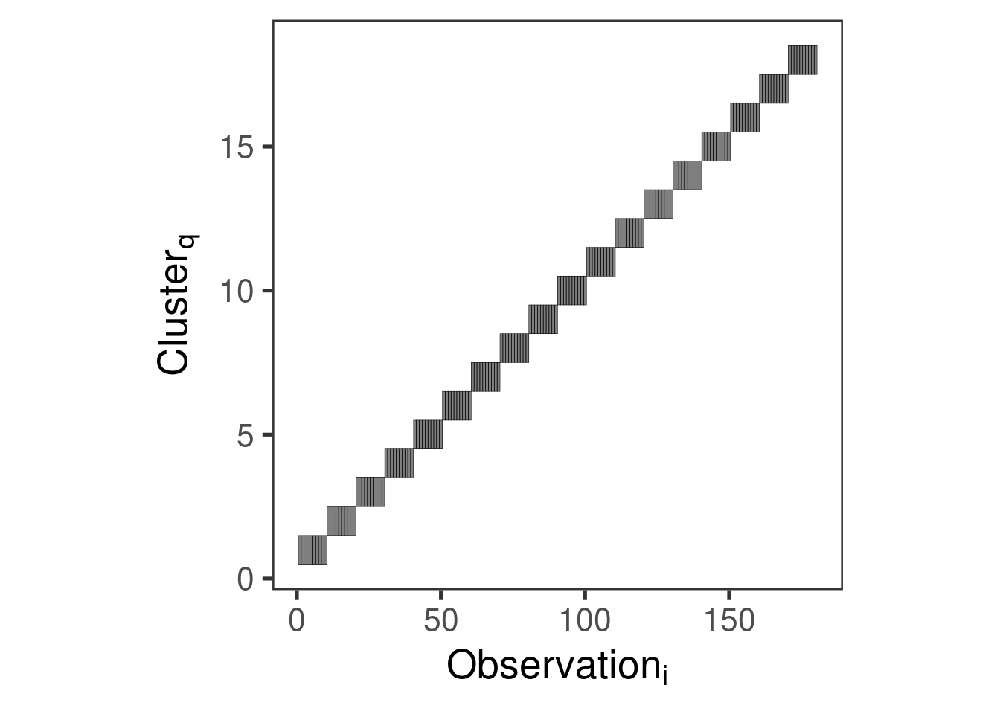
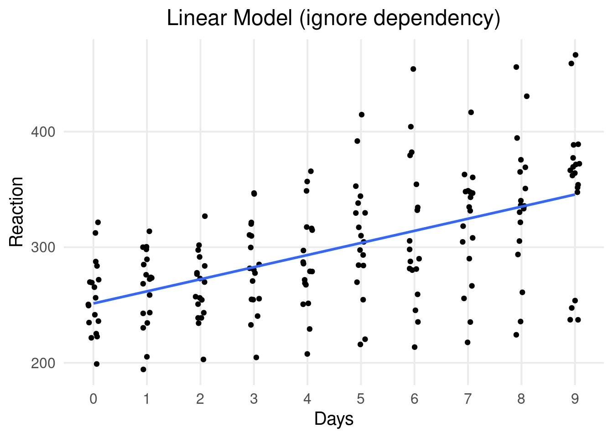
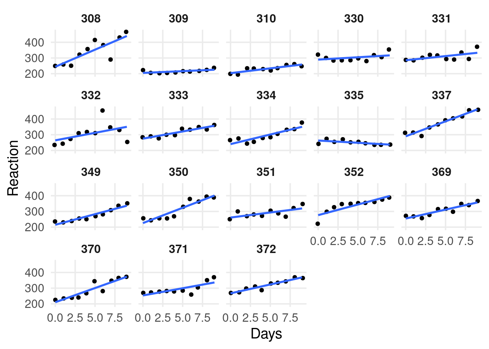
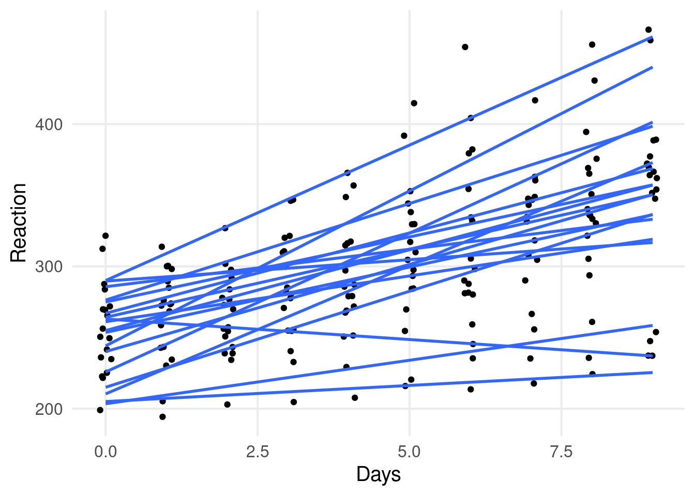
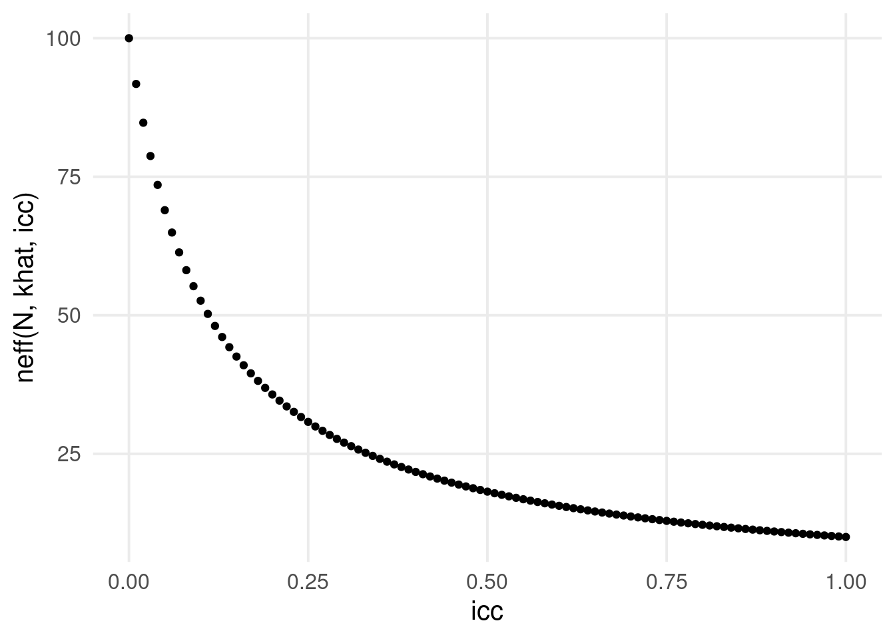
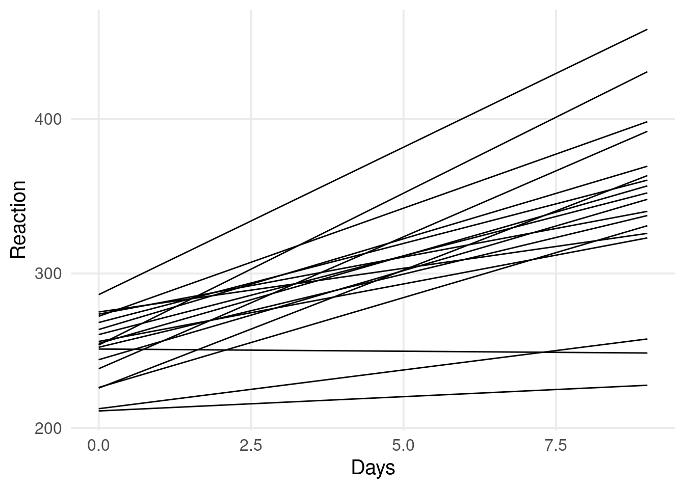
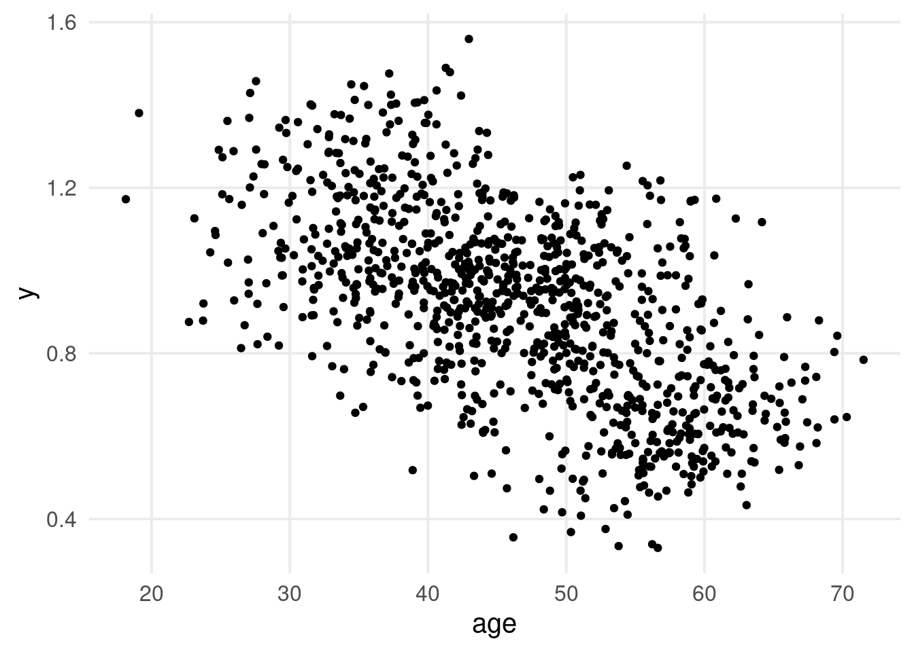
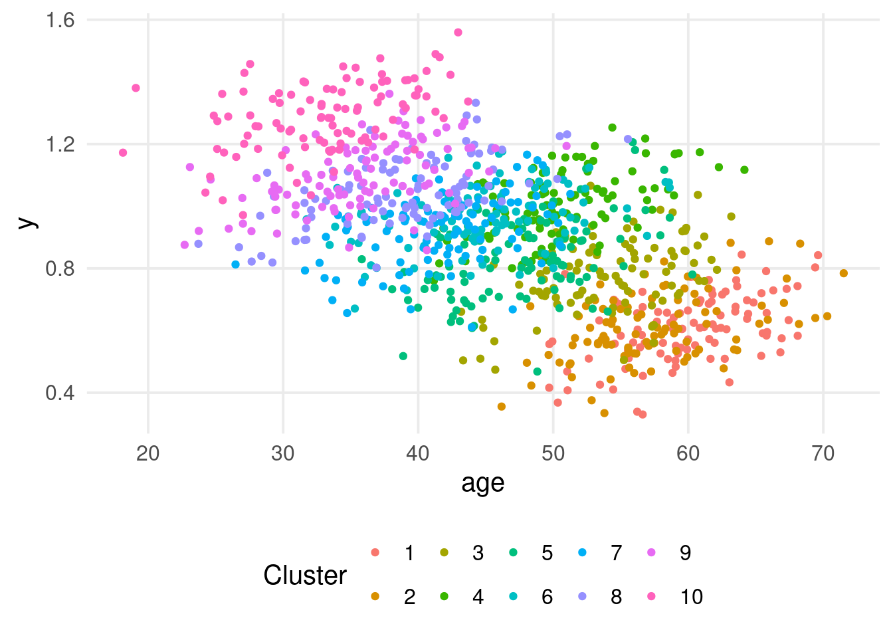
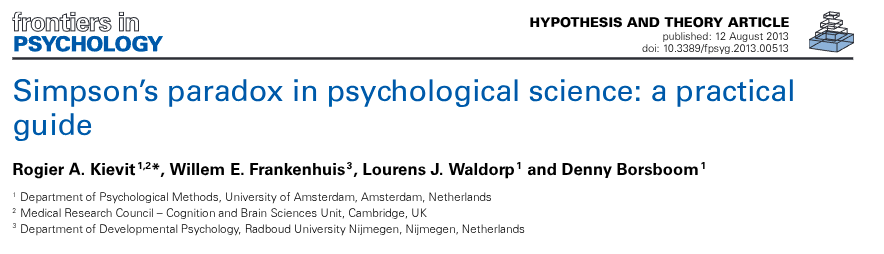
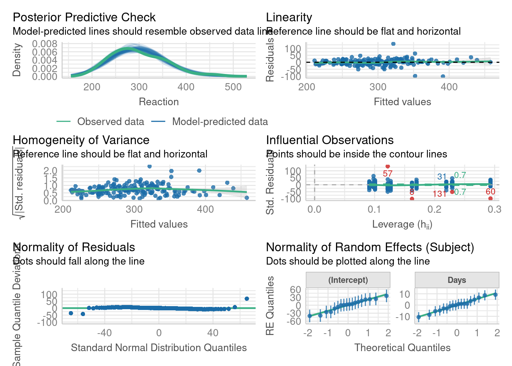

Where \(N\) is the number of observations, \(p\) is the number of predictors, \(q\) is the number of clusters (e.g., participants) and \(m\) is the number of random effects (e.g., nested or crossed).
Visualizing the \(\mathbf{Z}\) matrix
dat <- sleepstudyZ <-get_Z_matrix(~ Days + (1|Subject), dat)rownames(Z) <-NULLcolnames(Z) <-NULLreshape2::melt(Z) |>ggplot(aes(x = Var1, y = Var2, fill =factor(value), color =factor(value))) +geom_tile(show.legend =FALSE) +scale_fill_manual(values =c("transparent", scales::alpha("black", 0.5))) +scale_color_manual(values =c("transparent", "black")) +theme_bw(20) +theme(panel.grid =element_blank(),aspect.ratio =1) +ylab(latex2exp::TeX("$Cluster_q$")) +xlab(latex2exp::TeX("$Observation_i$"))

Why clustered data in Psychology?
In Psychology and Neuroscience we (almost) always have clustered data. For example:
Childrens nested within classrooms (maybe nested within schools)
Trials of a cognitive experiments nested within participants
…
The main point is that, clustered observations are not independent and we want to take into account the correlation.
Example with lme4::sleepstudy
A very simple example is the lme4::sleepstudy where participants reaction times where evaluated under sleep deprivation.
dat |>ggplot(aes(x = Days, y = Reaction)) +geom_point(position =position_jitter(width =0.1)) +scale_x_continuous(breaks =unique(dat$Days)) +geom_smooth(method ="lm", se =FALSE) +ggtitle("Linear Model (ignore dependency)")

By-participant model
dat |>ggplot(aes(x = Days, y = Reaction)) +geom_point(position =position_jitter(width =0.1)) +facet_wrap(~Subject) +geom_smooth(method ="lm", se =FALSE)

By-participant model
From the by-participant models, we see a clear dependency. Observations within the same participant are more similar compared to observations across participant.
In addition, at Day 0, some participants have higher/lower reaction times compared to the overall trend. Similarly, some participants have higher/lower slopes.
Individual differences are the core of Psychology and we want to explictly model them!
Individual differences
dat |>ggplot(aes(x = Days, y = Reaction, group = Subject)) +geom_point(position =position_jitter(width =0.1)) +geom_smooth(method ="lm", se =FALSE)

Are the observations clustered?
We can start assessing the clustering structure by fitting a mixed-model with only the random-intercepts and calculating the intraclass-correlation.
In Psychology it is common to collect clustered data and the data collection is usually time expensive. In addition, sample sizes are usually lower than the optimal level according to power calculation. Rao and Scott (1992) defined the concept of effective sample size for the reduction in the sample size (and thus power) according to the ICC in clustered data.
\[
N_{\text{eff}} = \frac{N}{1 + (\bar k - 1) \rho}
\] Where \(\bar k\) is the average number of observations per cluster.
N <-100khat <-10icc <-seq(0, 1, 0.01)qplot(icc, neff(N, khat, icc), type ="l", lwd =1)

Adding the fixed effect
Then we can add the fixed effect of Days. The variable is numeric starting with 0 up to 5 days. We can just add the variable as it is.
fit1 <-lmer(Reaction ~ Days + (1|Subject), data = dat)# equivalent to# fit1 <- update(fit0, . ~ . + Days)summary(fit1)
#> Linear mixed model fit by REML ['lmerMod']
#> Formula: Reaction ~ Days + (1 | Subject)
#> Data: dat
#>
#> REML criterion at convergence: 1786.5
#>
#> Scaled residuals:
#> Min 1Q Median 3Q Max
#> -3.2257 -0.5529 0.0109 0.5188 4.2506
#>
#> Random effects:
#> Groups Name Variance Std.Dev.
#> Subject (Intercept) 1378.2 37.12
#> Residual 960.5 30.99
#> Number of obs: 180, groups: Subject, 18
#>
#> Fixed effects:
#> Estimate Std. Error t value
#> (Intercept) 251.4051 9.7467 25.79
#> Days 10.4673 0.8042 13.02
#>
#> Correlation of Fixed Effects:
#> (Intr)
#> Days -0.371
Adding the fixed effect
This means that for each day we have an expected increase in reaction times of 10.47 milliseconds (or 0.01 seconds).
We have only the random intercept for subjects, thus we are assuming that each subject has the same sleep deprivation effect but can have different baseline reaction times.
A big problem with mixed models is that effects can be included both as fixed and random and the choice is not always easy. From the plots at the beginning there is a clear variability in slopes that the model is ignoring.
fit2 <-lmer(Reaction ~ Days + (Days|Subject), data = dat)summary(fit2)
#> Linear mixed model fit by REML ['lmerMod']
#> Formula: Reaction ~ Days + (Days | Subject)
#> Data: dat
#>
#> REML criterion at convergence: 1743.6
#>
#> Scaled residuals:
#> Min 1Q Median 3Q Max
#> -3.9536 -0.4634 0.0231 0.4634 5.1793
#>
#> Random effects:
#> Groups Name Variance Std.Dev. Corr
#> Subject (Intercept) 612.10 24.741
#> Days 35.07 5.922 0.07
#> Residual 654.94 25.592
#> Number of obs: 180, groups: Subject, 18
#>
#> Fixed effects:
#> Estimate Std. Error t value
#> (Intercept) 251.405 6.825 36.838
#> Days 10.467 1.546 6.771
#>
#> Correlation of Fixed Effects:
#> (Intr)
#> Days -0.138
Is the fixed effect enough?
The first important part is the estimation of the random part. Clearly the random slopes variance is not zero.
filter_output(summary(fit2), c("^Random effects|^Number of obs"))
#> Random effects:
#> Groups Name Variance Std.Dev. Corr
#> Subject (Intercept) 612.10 24.741
#> Days 35.07 5.922 0.07
#> Residual 654.94 25.592
#> Number of obs: 180, groups: Subject, 18
Is the fixed effect enough?
One of the most important part is that the standard error of the fixed coefficients is affected by the inclusion of the random slopes. Omitting the slopes was underestimating the standard error.
qualcosa su barr, keep it maximal, etc.
car::compareCoefs(fit1, fit2)
#> Calls:
#> 1: lmer(formula = Reaction ~ Days + (1 | Subject), data = dat)
#> 2: lmer(formula = Reaction ~ Days + (Days | Subject), data = dat)
#>
#> Model 1 Model 2
#> (Intercept) 251.41 251.41
#> SE 9.75 6.82
#>
#> Days 10.467 10.467
#> SE 0.804 1.546
#>
Is the fixed effect enough?
We can formally compare the models using a Likelihood Ratio Test (LRT)2:
DD <-expand_grid(Subject =unique(dat$Subject),Days =unique(dat$Days))DD$pi <-predict(fit2, newdata = DD)DD |>ggplot(aes(x = Days, y = pi, group = Subject)) +geom_line() +xlab("Days") +ylab("Reaction")

Shrinkage!
We can compare the fit of the multilevel model with linear models for each cluster. We can use the fit_by_cluster() function tha takes a formula, a grouping factor and fit a model for each cluster.
fitl <-fit_by_cluster(Reaction ~ Days | Subject, dat,model = lm)
N <-10DAYS <-10# max number of daysb00 <-300# grand-mean of reaction times at time 0b1 <-20# increase in reaction time for each daysb0 <-30# standard deviation interceptssb1 <-10# standard deviaton slopess <-100# residual standard deviation# we are simulating an ICC ofsb0^2/ (sb0^2+ s^2)#> [1] 0.08256881sim <-expand_grid(id =1:N,days =0:(DAYS -1))# random intercepts and slopes, rho = 0R <-0+diag(1-0, 2)VCOV <-diag(c(sb0, sb1)) %*% R %*%diag(c(sb0, sb1))RE <- MASS::mvrnorm(N, c(0, 0), VCOV)b0i <- RE[, 1]b1i <- RE[, 2]# linear predictorsim$lp <-with(sim, b00 + b0i[id] + (b1 + b1i[id]) * days)sim$rt <-rnorm(nrow(sim), sim$lp, s)
fit <-lmer(rt ~ days + (days|id), data = sim_missing)summary(fit)
#> Linear mixed model fit by REML ['lmerMod']
#> Formula: rt ~ days + (days | id)
#> Data: sim_missing
#>
#> REML criterion at convergence: 650
#>
#> Scaled residuals:
#> Min 1Q Median 3Q Max
#> -2.10251 -0.66077 0.00732 0.63516 2.01985
#>
#> Random effects:
#> Groups Name Variance Std.Dev. Corr
#> id (Intercept) 3543.5 59.53
#> days 451.5 21.25 -0.77
#> Residual 10994.3 104.85
#> Number of obs: 54, groups: id, 10
#>
#> Fixed effects:
#> Estimate Std. Error t value
#> (Intercept) 313.18 30.20 10.369
#> days 12.14 11.03 1.101
#>
#> Correlation of Fixed Effects:
#> (Intr)
#> days -0.761
Can the multilevel model be misleading?
What do you see in this plot?
k <-10# number of clusters/unitsn <-100# number of participants within each unitN <- n * k # total sample sizeunit <-rep(1:k, each = n)age <-rnorm(N, 60-3* (unit -1), 5) # age equationy <-0+rnorm(k, 0, 0.1)[unit] +0.01* age +0.1* (unit-1) +rnorm(N, 0, 0.1) # response equationdat <-data.frame(unit, age, y)
dat |>ggplot(aes(x = age, y = y)) +geom_point()

. . .
There is a clear negative relationship between age and the response variable y!
What do you see in this plot?
Let’s add the cluster information. What about now?
dat |>ggplot(aes(x = age, y = y)) +geom_point(aes(color =factor(unit))) +labs(color ="Cluster")

Simpson’s paradox
We have clustered data, and the relationship y ~ age seems to be different within and between clusters.
This phenomenon is called Simpson’s paradox and can be a serious problem in multilevel models.
Clearly this is a problem only for variables at the observation level (not at the cluster level).
For example, if clusters are schools and the observations are children. age is a variable at the children level (or aggregated at the school level). On the other side, the prestige of the school is a variable at the school level (the same for each child)
We can fit a multilevel model on the full dataset. What is the age slope? within or between?
fit <-lmer(y ~ age + (1|unit), data = dat)summary(fit)
#> Linear mixed model fit by REML ['lmerMod']
#> Formula: y ~ age + (1 | unit)
#> Data: dat
#>
#> REML criterion at convergence: -1710.7
#>
#> Scaled residuals:
#> Min 1Q Median 3Q Max
#> -3.7439 -0.6848 -0.0165 0.7191 3.0376
#>
#> Random effects:
#> Groups Name Variance Std.Dev.
#> unit (Intercept) 0.091429 0.30237
#> Residual 0.009747 0.09872
#> Number of obs: 1000, groups: unit, 10
#>
#> Fixed effects:
#> Estimate Std. Error t value
#> (Intercept) 0.4471843 0.0997411 4.483
#> age 0.0100761 0.0006074 16.590
#>
#> Correlation of Fixed Effects:
#> (Intr)
#> age -0.283
What about the multilevel model?
The estimated effect is a sort of weighted average of the within and between effect. This is usually not interesting, especially when the two effects are different. We want to isolate the between and within effects.
We need to include two version of the age variable, one centered on the clusters and the other representing the clusters means.
#> Linear mixed model fit by REML ['lmerMod']
#> Formula: y ~ age_cmc + age_cm + (1 | unit)
#> Data: dat
#>
#> REML criterion at convergence: -1724.4
#>
#> Scaled residuals:
#> Min 1Q Median 3Q Max
#> -3.7518 -0.6848 -0.0136 0.7126 3.0452
#>
#> Random effects:
#> Groups Name Variance Std.Dev.
#> unit (Intercept) 0.007530 0.08678
#> Residual 0.009746 0.09872
#> Number of obs: 1000, groups: unit, 10
#>
#> Fixed effects:
#> Estimate Std. Error t value
#> (Intercept) 1.9252710 0.1503998 12.801
#> age_cmc 0.0101730 0.0006083 16.724
#> age_cm -0.0217498 0.0031833 -6.832
#>
#> Correlation of Fixed Effects:
#> (Intr) ag_cmc
#> age_cmc 0.000
#> age_cm -0.983 0.000
What about the multilevel model?
The within-clusters effect can be also included as random slope3. Basically we allows not only the within effect to be different compared to the between effect but also that each cluster has a different sloope.
#> Linear mixed model fit by REML ['lmerMod']
#> Formula: y ~ age_cmc + age_cm + (age_cmc | unit)
#> Data: dat
#>
#> REML criterion at convergence: -1724.5
#>
#> Scaled residuals:
#> Min 1Q Median 3Q Max
#> -3.7516 -0.6911 -0.0114 0.7116 3.0458
#>
#> Random effects:
#> Groups Name Variance Std.Dev. Corr
#> unit (Intercept) 7.528e-03 0.0867634
#> age_cmc 2.053e-08 0.0001433 1.00
#> Residual 9.746e-03 0.0987213
#> Number of obs: 1000, groups: unit, 10
#>
#> Fixed effects:
#> Estimate Std. Error t value
#> (Intercept) 1.933188 0.149989 12.889
#> age_cmc 0.010176 0.000610 16.683
#> age_cm -0.021920 0.003174 -6.905
#>
#> Correlation of Fixed Effects:
#> (Intr) ag_cmc
#> age_cmc 0.020
#> age_cm -0.983 -0.006
#> optimizer (nloptwrap) convergence code: 0 (OK)
#> boundary (singular) fit: see help('isSingular')
More on the Simpson’s Paradox
Kievit et al. (2013) describe the SP problem in Psychology with methods to detect it.

What do you think?
Practical session
simulate clustered data with some predictors
simulate the same dataset but with a some between-within differences
Diagnostics
The performance package
The performance package has a series of nice functions to visualize and assess the models fit.
Let’s go back to our reaction times:
fit <-lmer(Reaction ~ Days + (Days|Subject), data = sleepstudy)performance::check_model(fit)
The performance package
fit <-lmer(Reaction ~ Days + (Days|Subject), data = sleepstudy)performance::check_model(fit)

Influence measures
Nieuwenhuis et al. (2012) describe the Influence.ME package that computes the standard influence measures (Cook’s distance, DFbeta, etc.) for lme4 models.
Also the lme4:::influence.merMod() compute all the measures. You can provide the groups = argument to specify at which level performing the leave-one-out procedure.
Influence measures, small exercise
Both lme4:::influence.merMod() and Influence.ME do not provide (good enough) plotting tools. Write a set of functions that takes a lme4 model in input, calculate the influence measures, organize everything in a data.frame and plot the influence measures results with ggplot2.
Effect sizes
\(R^2\) for multilevel models
The \(R^2\) for multilevel models is not computed as for standard regression models. Nakagawa, Johnson, and Schielzeth (2017) describe how to calculate the \(R^2\). They described the marginal (only fixed-effects) and the conditional (fixed and random-effects).
# or performance::r2()performance::r2_nakagawa(fit)
Clearly the conditional is always greater or equal to the marginal one.
References
Enders, Craig K, and Davood Tofighi. 2007. “Centering Predictor Variables in Cross-Sectional Multilevel Models: A New Look at an Old Issue.”Psychological Methods 12 (June): 121–38. https://doi.org/10.1037/1082-989X.12.2.121.
Kievit, Rogier A, Willem E Frankenhuis, Lourens J Waldorp, and Denny Borsboom. 2013. “Simpson’s Paradox in Psychological Science: A Practical Guide.”Frontiers in Psychology 4 (August): 513. https://doi.org/10.3389/fpsyg.2013.00513.
Nakagawa, Shinichi, Paul C D Johnson, and Holger Schielzeth. 2017. “The Coefficient of Determination R2 and Intra-Class Correlation Coefficient from Generalized Linear Mixed-Effects Models Revisited and Expanded.”Journal of the Royal Society, Interface / the Royal Society 14 (September). https://doi.org/10.1098/rsif.2017.0213.
Nieuwenhuis, Rense, Manfred, Te Grotenhuis, and Ben Pelzer. 2012. “Influence.ME: Tools for Detecting Influential Data in Mixed Effects Models.”The R Journal 4: 38. https://doi.org/10.32614/rj-2012-011.
Rao, J N, and A J Scott. 1992. “A Simple Method for the Analysis of Clustered Binary Data.”Biometrics 48 (June): 577–85. https://doi.org/10.2307/2532311.
Footnotes
This is just an approximation to estimate the impact of the ICC↩︎
Note that the anova() function is refitting models using Maximum Likelihood (and not REML). This is required to compare models using LRT↩︎
Of course, including the clusters means as random-slopes is not possible. Note that data are simulated without random slopes, thus the model estimate parameters at the boundaries↩︎